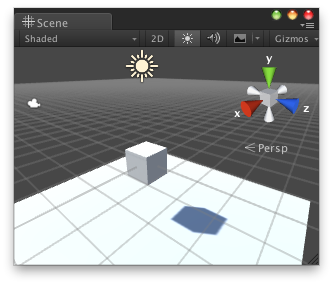
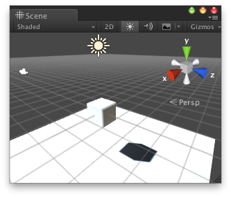
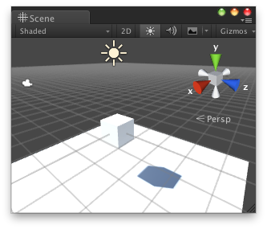
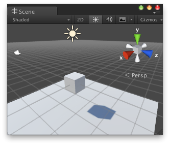
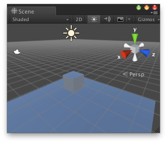

Unity5のLightmapで遊ぼうというかBake
概要
慣れる意味でいろいろな方法でBakeしたりしなかったりしてみる。
一応Githubに上げておいた。
Lgh
https://github.com/sassembla/Lgh
パターンバイパターン
シーンに置かれたLightのBaking設定、
Sceneに置かれたObjectのLightmap Static 設定、
Lighting > Scene > Ambient GI の設定 をそれぞれ行い、
どう見えるのかとかを整理してみた。
比較環境を作り出す手順はすべて一様で、以下。
1. PlaneとCubeを作る
2. CubeをPlaneの子に入れる
3. Plane, Light, Lightingのパラメータを変更する
4. PlaneのPrefabをつくって新規シーンで読み込み、lightmapの有無を見る
全3パラメータ、2x2x2の8パターン。
1.0_Lrt_nonst_SAGrt 2.0_Lrt_nonst_SAGb

3.0_Lrt_st_SAGb 4.0_Lb_st_SAGb

5.0_Lb_st_SAGrt 6.0_Lrt_st_SAGrt

7.0_Lb_nonst_SAGb 8.0_Lb_nonst_SAGrt

結果を表にするとこんな感じ。

オブジェクトの状態をstaticにして、colorが微妙に変わっちゃうのは何でなんだろう。
とりあえず
実際にBakeされたオブジェクトをPrefabにして別シーンに放り込んで、そのシーンのLightのBaking設定をBakedにしてみたところ。
画面左奥のものがBake済みのもの。手前のオブジェクトはstaticではないモノ。

Lightの設定がBakeなので、Bakeされた物体のみが光源計算されている。
Plane1 > Cubeを動かしても、影が再計算される。
Continuous Baking はcheck入り。
Lighting > Scene > Ambient GI はRealtimeのまま。
ということで、
・よそのSceneでBakeしたPrefabも、lightmapの情報を持ったまま他のシーンに持ち込める
・その際、Bakeに使ったSceneに関連するファイル(Lightmap-0_comp_dir, Lightmap-0_comp_light)は不要。Prefabから参照されてないみたい。
Light のBaking設定について
これ。

Light のBaking設定は、
Realtime: なんでもかんでも加算、Bakedなモノでも無差別に明るくなる
Baked: Bakedなモノに干渉しない、他も照らさない
Mixed: Bakedのモノには干渉しない、他を照らす
という結果になる。
SceneのAmbient GI設定について
LightのBaking設定に似ている。

Lighting > Scene > Ambient GIの設定は、
Realtime: なんでもかんでも加算、Bakedなモノでも無差別に明るくなる
Baked: Bakedなモノに干渉しない、他は照らす
という結果になる。
なぜ時々茶色くなるのか
シーンを開き直したら、あれ、茶色い。

みたいな時無いっすか。自分ときどきビビるんだけど。

Lighying > Build するか、
Continuous Baking のチェックを入れると結局Lighting > Buildをやったのと同じになって、色味が戻る。
Continuous Bakingのチェックがすでに入っていても、Sceneを開き直した際に反映されない事があるので、
チェックを入れ直すと反映される。

はい。ヌッガーーーー不完全だなァァアアアア！！！！
真っ黒になって死ぬ
シーンを開くと真っ黒になっててヒッてなる。
こんな感じこんな感じ。

Baked したものだけが真っ黒な状態で表面カリッカリやぞみたいな時がある。
右の方のキューブが白いのは、こいつはBakeを使ってないから。
完全なUnityのロードエラーなのでは？？ と思っている。
このへんも、
Lighying > Build するか、
Continuous Baking のチェックを入れると結局Lighting > Buildをやったのと同じになって、失われた色が戻る。
やったねたえちゃん！！ なんとか何も問題が無かった事にできそうだよ！